Introduction
Professor Woodward's MultiMo-Bat is a passive gliding robot that launches itself up into the air and then releases its wings to enter a glide. Under still air conditions, the glide path of the robot can be preset by mounting wings of different sizes. However, it is not possible to dynamically control the glide path during flight. This is the key performance capability of the robot I've been working on now. To design the robot to adjust its pitch dynamically, the robot must be able shift its wings such that pitch down or pitch up can be achieved regardless of the unsteady aerodynamics acting on the flier. By analyzing the aerodynamics of a gliding robot like the MultiMo-Bat, this requirement can be translated into the robot design to ensure the robot is capable of attaining continuous pitch control.
Problem Setup
Although analyzing a system with unsteady aerodynamics may initially be frightening, there are some assumptions that can be made to simplify the problem. As a reminder, the lift force is defined as the resulting aerodynamic force perpendicular to the direction of the flow and the drag force is defined as the resulting aerodynamic force parallel to the direction of the flow. These forces are generated by higher air pressure under the wing than above and can be found by integrating the air pressure distribution over the surface area of the wings.
So what do I mean by "unsteady aerodynamics"? Looking at one point near the gliding robot, the aerodynamics responsible for the robot's flight aren't constant in time. The robot is initially falling until it gains enough speed for the aerodynamic forces to be significant enough (aerodynamic forces are proportional to flow speed squared) to bring the robot into a glide. Therefore, the speed of the air colliding with the wings of the gliding robot isn't constant in time.
During this process as the aerodynamic forces grow, the robot also rotates in the pitch direction passively. Simultaneously, the direction of the air flow across the wings changes as the robot's velocity transistions from mostly vertical in the beginning to mostly horizontal at the end of the glide (robot velocity equals flow velocity in still air). Both the wing angle and air flow direction impact the angle of attack (angle between incoming flow and wing, abbreviated AoA), but in this case the effects somewhat cancel each other out. This isn't a perfect cancellation and the AoA will vary further as the wings are actively moved to achieve pitch control. Therefore, the AoA isn't constant in time either.
In conclusion, the air speed and angle of attack (AoA) are unsteady resulting in unsteady aerodynamic forces. The figure below illustrates some of the key terms related to this aerodynamics discussion for a simplified gliding robot. Note how the AoA α(t) and speed v(t) are functions of time as they are unsteady.
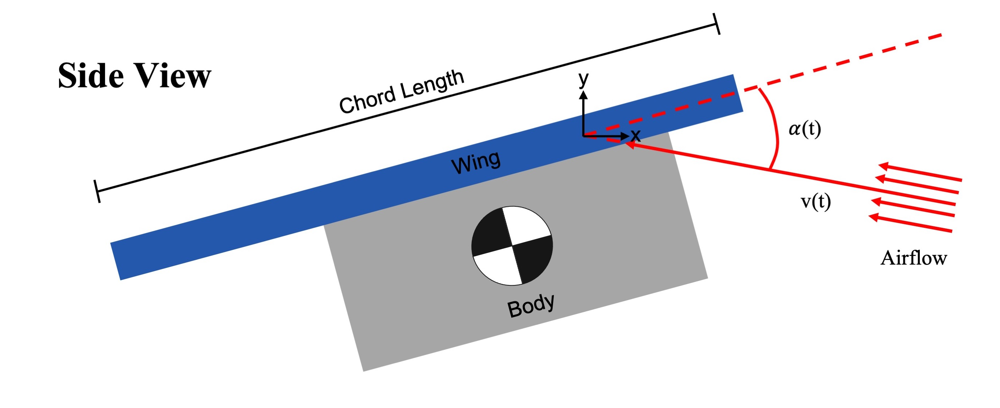Key Aerodynamics Terms
Now that I've identified the problem as including unsteady aerodynamics and drawn a simplified schematic of the system, the next step is to begin to explore the system dynamics. To visualize the forces and moments involved, I've included a free body diagram below using a similar from as the previous robot schematic. Green arrows represent forces including lift - L(t), drag - D(t), and weight - W. Purple lines are used to mark chordwise positions on the robot including the center of mass - COM, center of pressure - COP(t), and aerodynamic center - AC. Again, note how some of these variables are unsteady (i.e. functions of time).
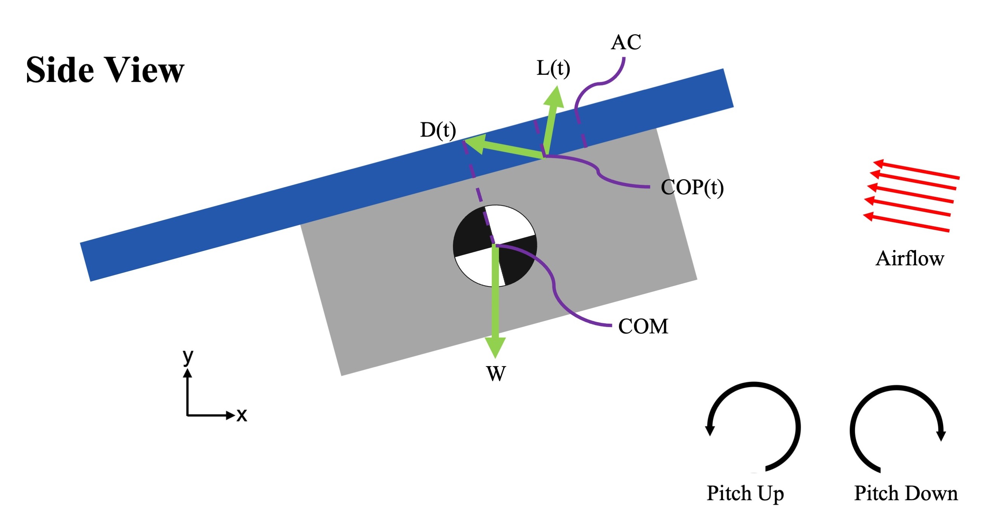Free Body Diagram
Looking at the free body diagram above, it is apparent that the pitch angle of the robot will be controlled by the in-plane moments resulting from the forces. To this end, it's important to know where the forces are applied in addition to in what direction and with what magnitude. The resultant weight force—from summing mass contributions across the robot—is located at the center of mass (COM). The location of the COM is generally fixed by the robot design, but will move slightly as the wings move since the mass of the wings is non-negligible. The resultant aerodynamic force—from integrating air pressure over the surface area of the robot—is located at the center of pressure (COP). Like the COM, the location of the COP is impacted by the robot design. However, the COP will also vary during flight dependent on the AoA.
The moment produced by the resultant aerodynamic force acting at the COP about the COM is responsible for the pitch behavior. Seeing as this resultant aerodynamic force is acting up and to the left, both horizontal and vertical components of the force generate counter-clockwise (pitch up) moments about the COM. Therefore, in the pictured state the aerodynamic force is imparting pitch up acceleration on the robot. If we knew the direction of the resultant aerodynamic force, the magnitude of the resultant aerodynamic force, and location of the COP we could solve for the pitching moment by crossing the aerodynamic force vector with a vector drawn from the COP to the COM. Then using Newton's 2nd Law for rotational systems, we could solve for the resulting pitch acceleration assuming we know the rotational inertia of the robot from its design. We don't have all this information on the aerodynamic force, but fortunately we're don't need to know the magnitude of the pitching moment. In order to achieve pitch control, we're mainly concerned with being able to attain both directions of the pitching moment—pitch up and pitch down. From the free body diagram, if the COP is located ahead of the COM in the chordwise direction then the robot will pitch up. On the other hand, if the COP is located behind the COM then the robot will pitch down. To gain a better understanding for this concept, it's helpful to return to Professor Woodward's MultiMo-Bat robot to examine how this pitching behavior was exhibited passively.
Passive Pitch Control
The MultiMo-Bat jumps up into the air, releases its wings, and then enters a glide trajectory passively. This glide is considered passive since the robot naturally begins gliding as it falls. By examining how this gliding behavior occurs naturally in a robot with wings, it is then easier to elucidate how this behavior can be modified slightly to control the glide trajectory. Below are a series of figures depicting the different states the robot moves through during this passive gliding process. For simplicity, the robot is drawn to just be a flat plate airfoil having infinitesimal thickness such that only the component of the aerodynamic force perpendicular to the airfoil will generate an aerodynamic moment about the center of mass. In aerodynamics, stall is defined as a reduction in lift. This is usually due to flow separation following an increase in the AoA or reduction in flight speed. In the below figures, I've chosen to define the full stall state as when the airfoil produces zero lift. It's worthwhile to note how the angle and magnitude of the velocity and aerodynamic force vectors change over the course of this passive glide.
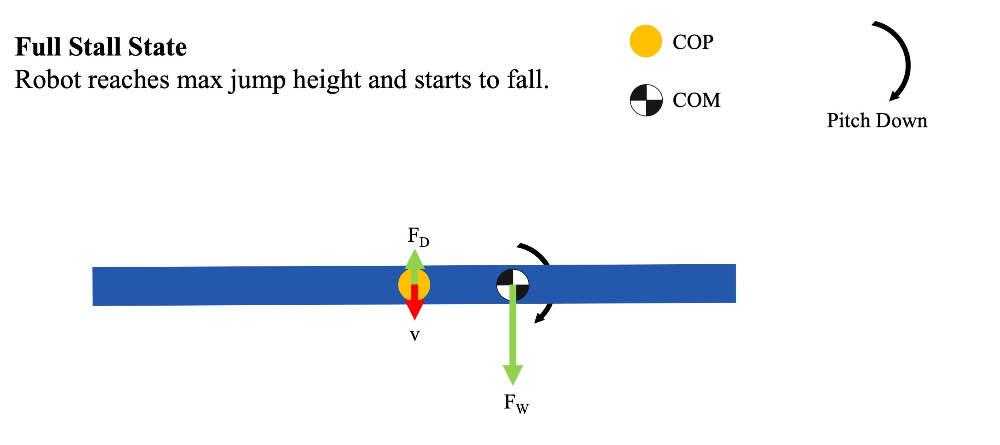Full Stall State
When initially dropped, the COP is centered on the airfoil as the robot begins to gain speed while falling with its wings oriented horizontally. This generates a small pitch down moment causing the body to rotate from the initial horizontal orientation to a more nose down direction.
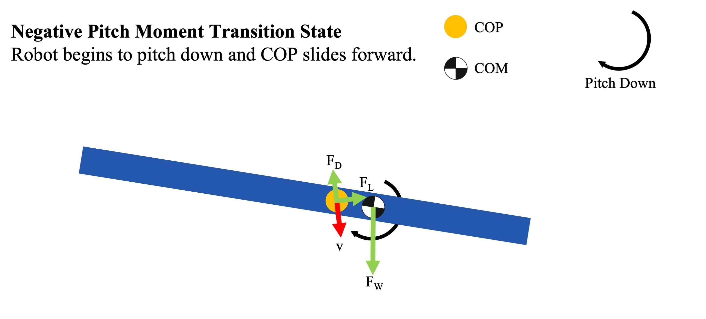Negative Pitch Moment Transition State
As the robot begins to pitch down, the AoA changes causing the COP to slide forward. This is partially the result of the rotation of the body, but also the result of the redirection of the air velocity vector as the robot begins to gain horizontal velocity instead of just falling vertically. As the COP is still behind the COM, the COP continues to generate a pitch down moment about the COM, accelerating the pitch down motion.
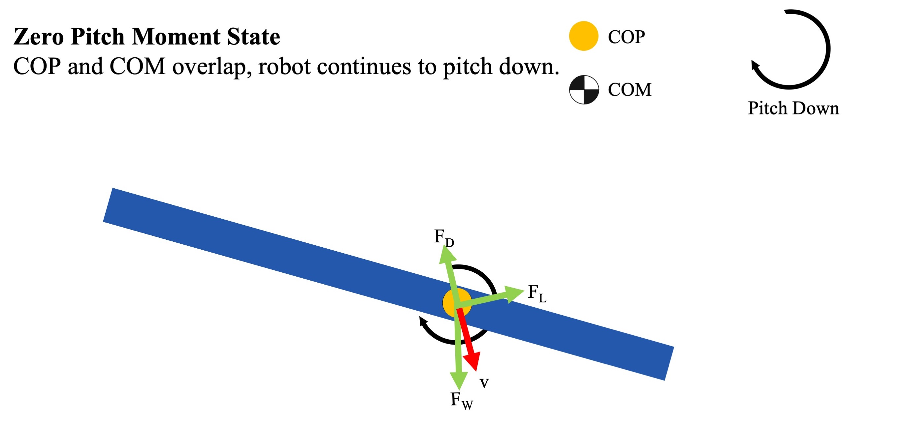Zero Pitch Moment State
As the COP slides forward, it eventually lies directly over the COM. At this point, the COP generates no moment relative to the COM. However, the rotational inertia of the robot from the previous pitch down action continues to propel the robot's pitch down motion.
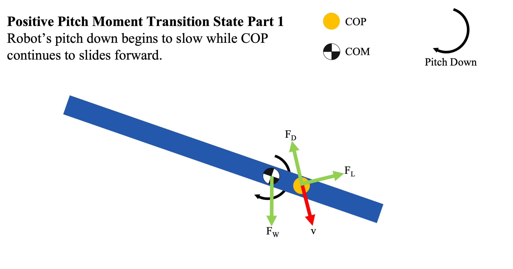Positive Pitch Moment Transition State Part 1
The COP continues to slide forward, now generating a pitch up moment as the COP lies in front of the COM. This pitch up moment counters the rotational pitch down inertia of the robot, causing its pitch down rate to slow.
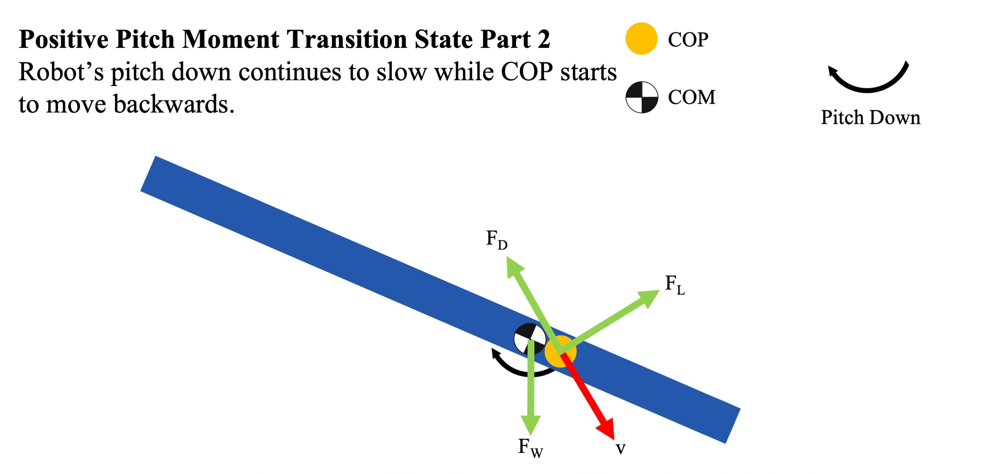Positive Pitch Moment Transition State Part 2
Eventually the COP reaches some maximum distance forward on the robot and begins to retreat. As the COP moves backwards, its pitch lever arm decreases. However, the magnitude of the aerodynamic forces are likely still increasing somewhat as the robot continues to gain velocity, albeit likely at a slower rate than the decrease in lever arm. As a result, the pitch up moment likely decreases somewhat. Again, just because the robot is experiencing a pitch up moment does not mean the robot will be pitching up, it could instead just be continuing to slow its pitch down rotation.
Where exactly this turnaround point lies for the COP is unclear. For the case of a rigid airfoil with a rectangular planform and symmetric airfoil as pictured, a guess might be the quarter chord length point on the airfoil. For these simplified airfoils, the quarter chord length has been found both experimentally and theoretically to be the point where the COP will lie during flight regardless of AoA. This point is called the Aerodynamic Center (AC) and is used in pitch or longitudinal stability analysis of aircraft. It is a convenient point for theoretical analyses of aircraft as the aerodynamic pitch moment generated about this point is constant regardless of AoA (i.e. the aerodynamic force increases by the same factor that the lever arm between the COP and AC decreases by). For rectangular airfoils, the AC is located at the quarter chord length and for symmetric airfoils (i.e. zero camber), the aerodynamic moment about the AC is zero. Therefore, during flight the COP on this idealized airfoil will lie at the quarter chord length. It is worthwhile to keep in mind that there is nothing physical occuring at the AC rather it is just more convenient to sum the moments about the AC than the center of rotation at the COM when considering pitch stability.
For a rectangular asymmetric airfoil, the COP slides forward as the AoA increases until the COP reaches the AC and the flier begins to stall. This would seem to indicate that the AC is a reasonable location for the COP turaround point during the transition from diving to gliding. Furthermore, there's only so far the COP can move up......Likewise these assumptions are unreasonable for flapping flight.........The AC is only a guess for the turnaround point for the AC since this passive gliding action—beginning with a nose down dive—is not representative of typical flying conditions. The quarter chord length positioning of the AC (and COP for this flat plate example) is determined by blowing air over an airfoil at small angles of attack (~0-15°). On the contrary, the COP must be moving across the length of the body as shown in the previous schematics to explain the behavior observed in the MultiMo-Bat. It does not remain stationary at the quarter chord length. Even once the robot enters an equilibrium glide, the COP won't remain at the quarter chord length unless the COM is also located at the quarter chord length. Given how much the COP moves around during the passive glide, it's unclear whether the COP will ever move past the quarter chord length. The turnaround point of the COP may also be dependent upon the location of the COM on the robot. The quarter chord length assumption also assumes the airfoil is symmetric which will not be true as the ripstop nylon tends to camber some naturally............
Experimental Proof of Quarter Chord Location of AC
At this point a number of different outcomes are possible. Below are the two extremes at either end of the spectrum of possible outcomes.
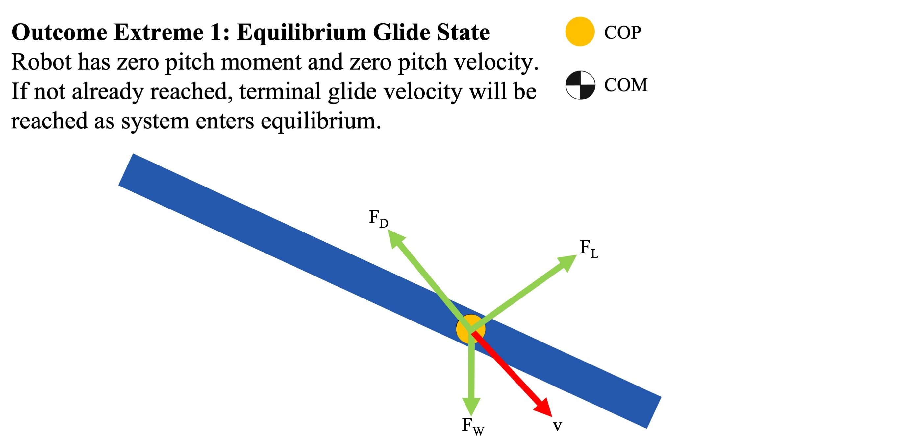Outcome Extreme 1: Equilibrium Glide State
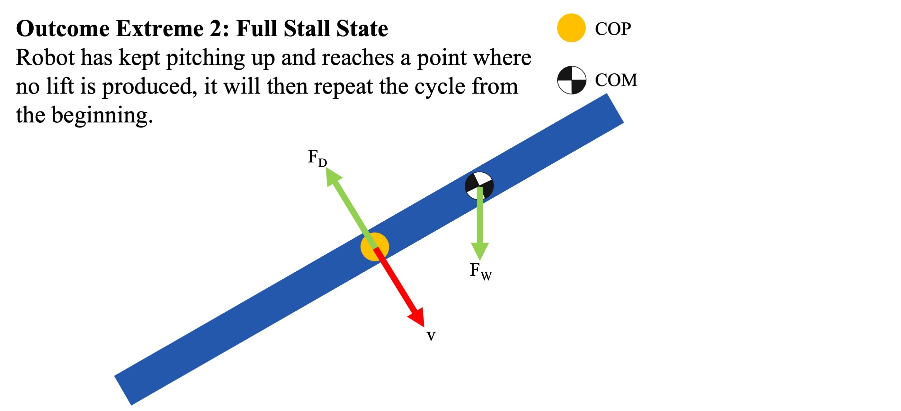Outcome Extreme 2: Full Stall State
Pitch Control with Chordwise Wing Shifting
Centered Wing Diagram
Rear Wing Diagram

Centered vs. Rear Wing Arrangments
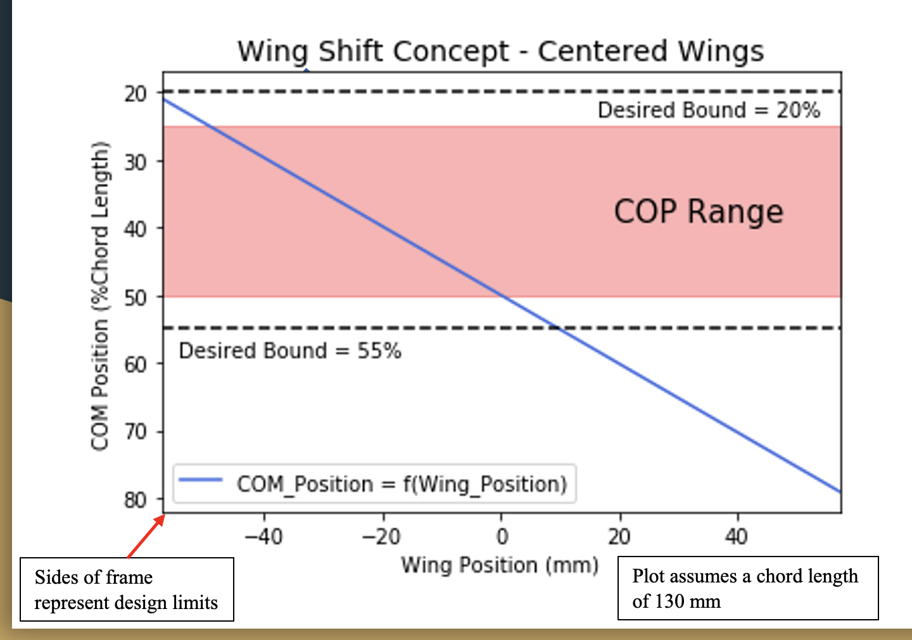Centered COM Concept Plot
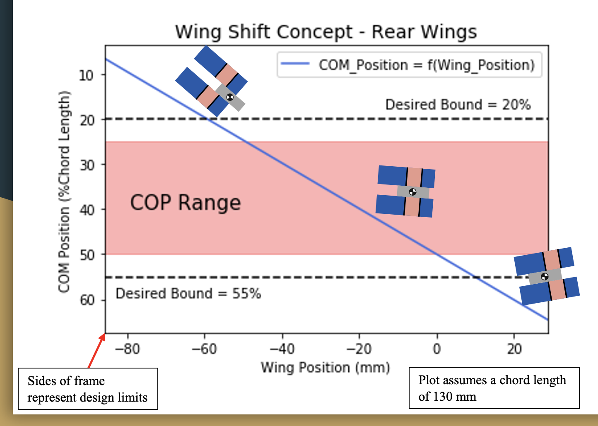Rear COM Concept Plot
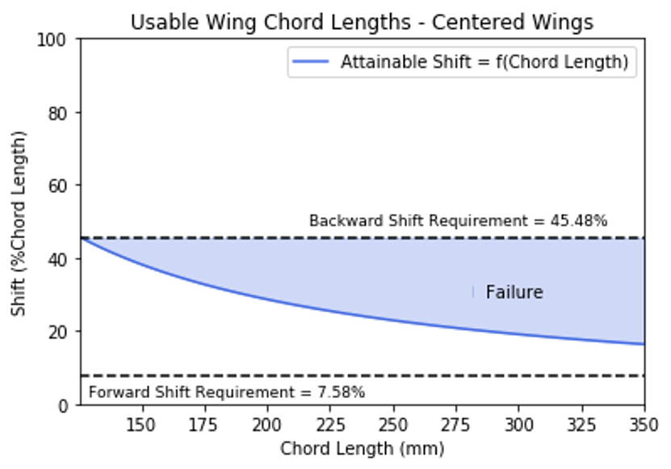Centered Chord Lengths Plot
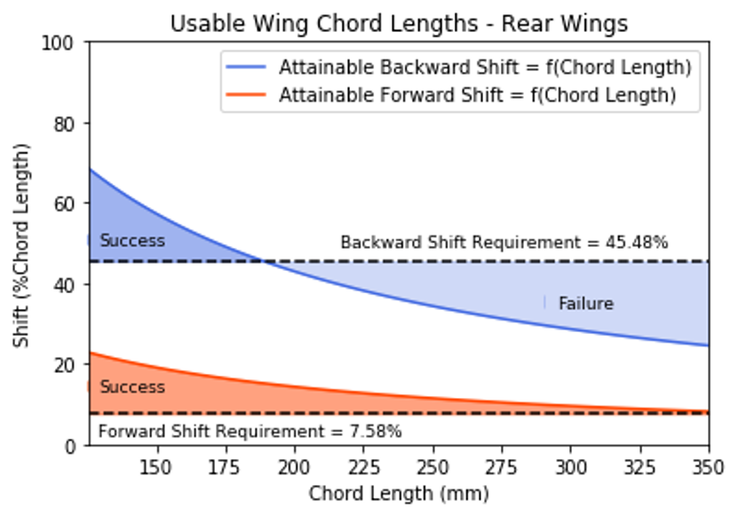Rear Chord Lengths Plot
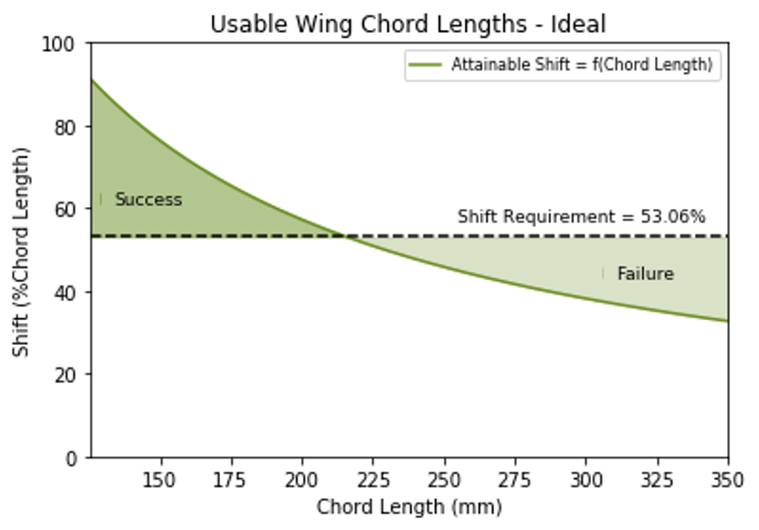Ideal Chord Lengths Plot